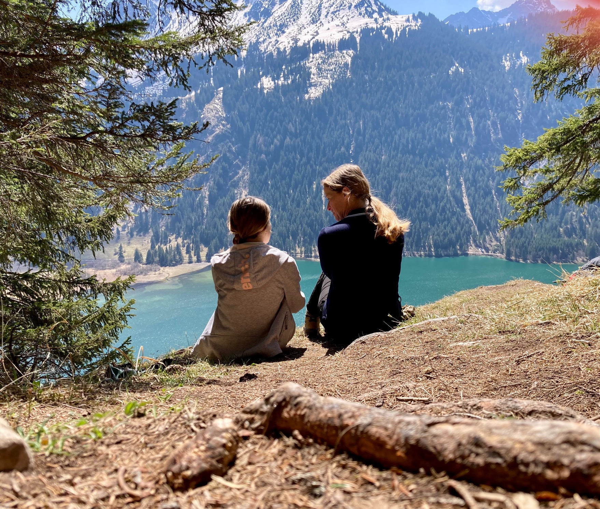
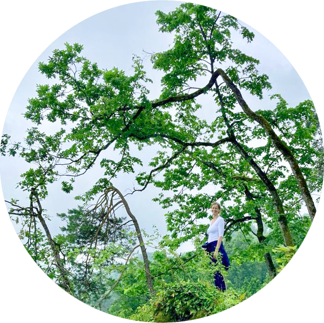

Magst du wissen, wieso ich diese Waldgespräche, dieses Coaching im Wald anbiete? Zunächst einmal, weil ich ausgebildete Lehrerin bin mit Berufswahl- und Lerncoaching Weiterbildung an der Fachhochschule und vielen Jahren Erfahrung in Gesprächen mit Jugendlichen und Erwachsenen. Dann bin ich auch Mutter und kenne die Sorgen und Nöte von Eltern und ihren Kindern auf dem Weg hin zum Erwachsensein.


"Du kannst etwas verändern
jeden Tag und zu jeder Zeit"
- Jane Goddall


Über mich
Hallo, ich bin Ivana
Coaching in der Natur
Ich werde erstmal zuhören. Dann werden wir ins Gespräch kommen. Ich gebe dir gerne Feedback, wenn du dies wünscht. Du wirst staunen, wie viele Lösungswege und Möglichkeiten es gibt, um weiter zu kommen auf deinem Weg... Egal, ob du abnehmen willst, einen Streit klären, die Noten in der Schule verbessern, eine Lehrstelle oder einen neuen Job finden, deinen Selbstwert stärken, deine Angst vor Spaziergängen im Wald abbauen oder irgend etwas anderes. Ich bin für dich da und begleite dich bei deinem Prozess zu einem Leben mit viel Leichtigkeit.
Coaching Gespräche
Ausschlaggebend für die Idee der Waldgespräche waren jedoch die Spaziergänge und Joggingrunden im Wald, welche ich während der Corona-Zeit fast täglich unternommen habe. Ich durfte die belebende und erfrischende Wirkung dieser Naturmomente immer wieder erleben. Ich habe mir viele Gedanken gemacht. Das war ganz leicht, einfach Ideen entstehen lassen und wieder verwerfen. Mich mit mir auseinandersetzen und erstmal erkennen, was mir wichtig ist und wo ich hin will. In der Bewegung draussen in der Natur, ohne Handy und ohne Ablenkung, ist vieles möglich, was Zuhause zwischen Arbeit und Haushalt keinen Platz findet.


Was beschäftigt dich?
Nach einem ersten Kontakt per Mail, Telefon oder Instagramm treffen wir uns bei mir Zuhause in Pfeffingen BL. Und dann geht es auch schon ab in den Wald. Rund um Pfeffingen gibt es zahlreiche Möglichkeiten für Waldspaziergänge. Je nach Zeit, die du mitbringst, werde ich die Strecke auswählen. Wir können steil bergauf oder gemütlich den Waldrand entlang gehen. Es gibt diverse Bänkli mit Aussicht, falls du dich ausruhen möchtest Du bestimmst, was du brauchst.
Termine
Freie Termine gibt es von Mo-Fr sowie Sa-Vormittag. Ich melde mich innerhalb von 48 Stunden auf deine Anfrage. Für's Coaching von Mädchen im Alter von 12-18 Jahren ist ein Erstgespräch mit einem Elternteil erforderlich.
Die Waldgespräche dauern im Minimum 60 Minuten. Die Bezahlung erfolgt durch Überweisung im Voraus oder Barzahlung. Bei Verhinderung können Gespräche bis 24 Stunden vorher kostenlos storniert werden.
Für Mädchen & junge Frauen von 12-22 Jahren
90 FR /Stunde
Für Frauen ab 23 Jahren
120 FR /Stunde